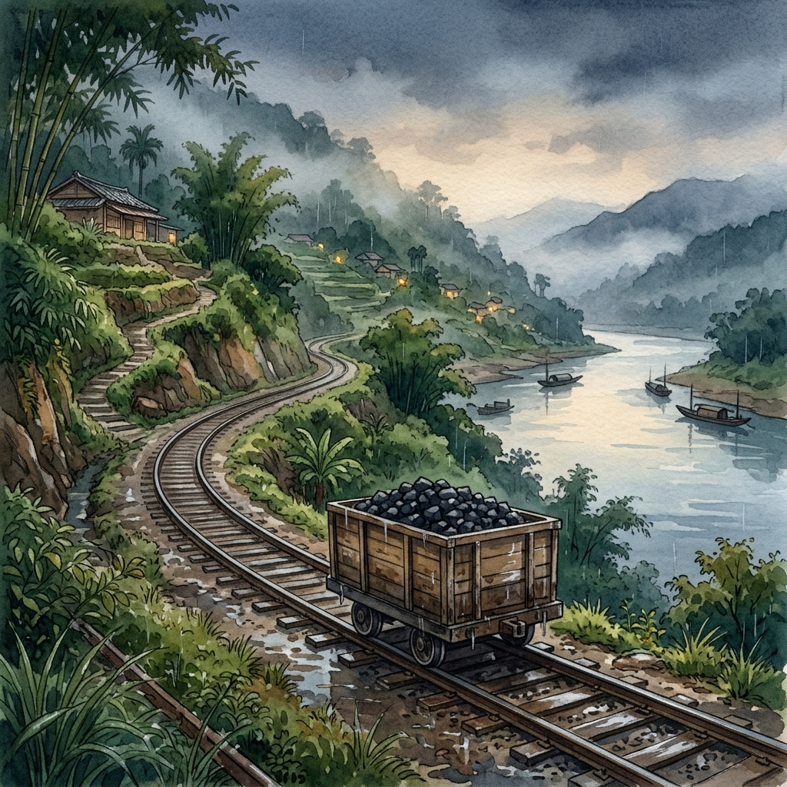

翁東源輕便車路：頂城與消失的運煤之路

北宜路一段的車流喧囂，很難讓人聯想到，這裡曾有一條窄窄的鐵軌沿著山壁伸展，木造台車在車夫的吆喝聲中軋軋前行。本次踏查由在地耆老翁東源先生與居住於國校里的陳啟川大哥帶路，我們從北宜路一段 108 號的菜苗店集合出發，穿過時間的摺痕，將昔日的明治煤礦、輕便車道與聚落記憶一幕幕重新拼起。
第一階段：礦業遺址與交通地景變遷
📍 景點一：明治煤礦遺址與老闆舊居
位於今日北宜路一段 140 巷 5 號的民房，曾是明治煤礦老闆的辦公室兼住宅。那是一棟擁有「三間雙面落水」屋頂的平房，此區域在在地人口中被稱為「頂城」。
帶路的翁東源先生回憶，他的父親在民國 25 年來到新店做礦工，隨後進入明治煤礦工作。直到民國 39 年明治煤礦關閉後，父親才轉往安坑錦繡山莊附近的礦坑繼續謀生。翁先生特別提到，早年明治煤礦老闆的房子其實是蓋在今天的北宜路上，後來因為北宜路拓寬，房子才往後退縮重建。
站在巷口，學員們發現今日蓋房子的平地與早期輕便車道的地勢高低落差極大。翁先生解釋道，這正是因為早年明治煤礦開採時，將大量的廢土與土石填在此處，久而久之便將低窪處填平、抬高了地勢，形成了今天我們所見的獨特高差。
📍 景點二：天車（捲揚機）與斜坡地貌
新店早期的礦坑多為斜坡坑道設計。在運送煤炭時，仰賴被稱為「天車」的捲揚機（大型馬達設備），以粗鋼索將裝滿煤炭的台車沿著斜坡軌道從坑口拉出。如今，昔日安裝捲揚機的坑口上方早已蓋起了密密的民房。
在窄巷的角落，仍遺留著一堵斑駁的紅磚牆，翁先生指著牆說，這正是早年天車運轉時留下的遺物。我們學員合影站立的地方，昔日其實是一座跨越低窪處的拱橋，拱橋下方曾有周再思輕便鐵路穿過。斜坡的坡度至今依然可辨，標記著這條黑色產業路線的起點與終點。
關於「豬屠」（屠宰場）的文史考證：
根據明治 38 年（1905）《深坑廳風俗紀略》記載：「廳下市場准景尾新店兩街始設之⋯杳景尾新店兩處商品。如染房、藥舖、煙館、鹽館、○店、綵帛、豬屠。」其中「豬屠」（ti-tû）即為公設屠宰場，顯示早在日治初期此處即設有屠宰功能。
明治 43 年（1910）《臺灣日日新報》亦報導：「新店市街雖狹。然人民甚眾。前市場及豬屠。因規模位置不廣。遂致十分不便。近當局特于街後。擇寬曠之處。起蓋市場及豬屠。」如今，舊屠宰場早已改建為一般住宅。翁先生笑著補充，以前屠宰場每年約在農曆 12 月 23 日送神日後到除夕前最為忙碌，豬隻進出嚎叫與人聲鼎沸，是老新店人深刻的年關記憶。
📍 景點三：輕便路與王家包子店（物資收發處）
沿著昔日的「輕便路」軌道線路前行，這條路以前大致沿著山壁興建，主要是實業家周再思所鋪設，用於運送煤礦與民生物資。隨著現代道路的拓寬與地貌整平，昔日地勢較低的軌道路線，大多數已被加蓋或填平，成為今日馬路底下的雨水排水道。
現今北宜路上的「王家包子店」附近，曾是輕便車的重要「出入收發登記處」。早年這裡只稀落蓋了四間民房，因此被稱為「四崁仔」。當時輕便台車行經此處，都必須向辦公室登記。若是居住在廣興或灣潭的居民，委託輕便車夫幫忙攜帶柴米油鹽等日常用品回去，也必須在此處辦理登記報備，是一處樞紐性的生活物資關卡。
第二階段：街區演變、特色建築與聚落記憶
📍 景點四：潤華火柴工廠與舊公部門遺址
現今光明街旁的便利商店與滷肉飯店鋪下方的四間店面處，曾是張文華二老闆所開設的「潤華火柴盒工廠」，曾養活了無數在地家庭的婦女手工活。而早年新店街的舊市鎮中心、文山派出所、消防隊、舊屠宰場以及在地著名的「碧光照照相館」，也都聚集在這一條繁榮的軸線上。
📍 景點五：廣明路更名
根據口述，現今的「北宜路」與「光明街」在最早期被統一稱作「廣明路」，此一名稱變遷深深刻在老一輩居民的集體記憶中。隨後因行政區域重整與都市計畫，才逐漸分化為兩條特色截然不同的道路。
📍 景點六：日治宿舍群與羅東檜木門窗
翁東源先生年輕時曾是一位優秀的木匠。他回憶道，日治時期到戰後初期，新店街上許多做工精美的大氣建築（例如外牆貼著綠色磁磚的「綠色大樓」、舊新店診所等），其內部所使用的檜木門窗，皆是特地從羅東聘請手藝精湛的木工師傅前來量身製作，木料扎實、卡榫嚴密，展現了極高的工藝價值。
📍 景點七：摩天嶺、開天宮與土地產權共業
從新店路上著名的「開天宮」後方往上走，有一段極為陡峭的上坡路，在地人俗稱為「摩天嶺」。這裡的民房多是依著陡峭的磐石山壁、因應落差而建，高低錯落，地基交疊，形成新店溪畔極具代表性的坡地聚落與獨特景觀。
📍 景點八：山林管理所與新店教育榮景
在日治時期，光明街國泰大樓遺址附近曾設有「山林管理所」，專門負責山林資源的開發與保育，後來在戰後初期曾一度改為舊衛生所使用。
早期新店的教育資源與素質在台北南區名聲極為響亮。據耆老口述，當時甚至有萬華區的家長，特地讓學童每天越區搭火車到新店國小或文山中學就讀；而當時的五峰國中在草創初期，更曾被譽為「北一女」的分校，顯見新店文風鼎盛與教育資源的特殊地位。
這趟由翁東源先生與陳啟川大哥帶領的走讀，不僅讓我們看見了明治煤礦與輕便鐵軌的遺存線索，更讓隱沒在街道底下的水文、產業與庶民生活重新發聲。文字與腳步在巷弄間相遇，拼湊出這份最真實的地方紀錄。